Open-Source Omnidirectional Robot Base
A modular, expanding holonomic platform built around open-source hardware and accessible electronics. The goal is a robot base that scales and moves omnidirectionally without custom silicon or proprietary parts. Mechanical, electrical, and software development are all still active.
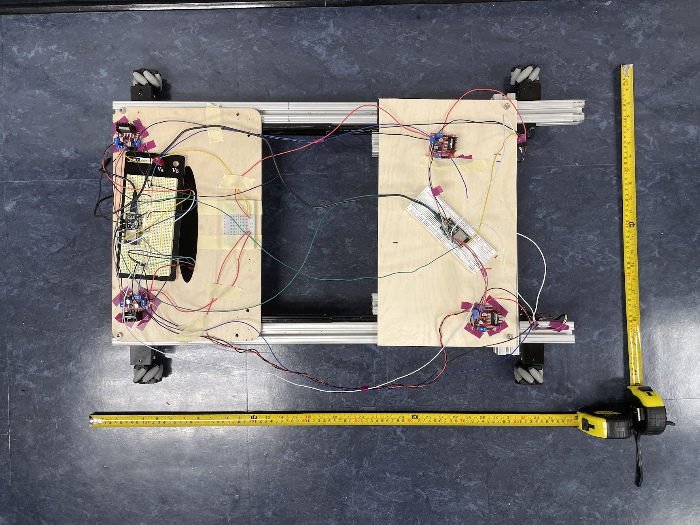
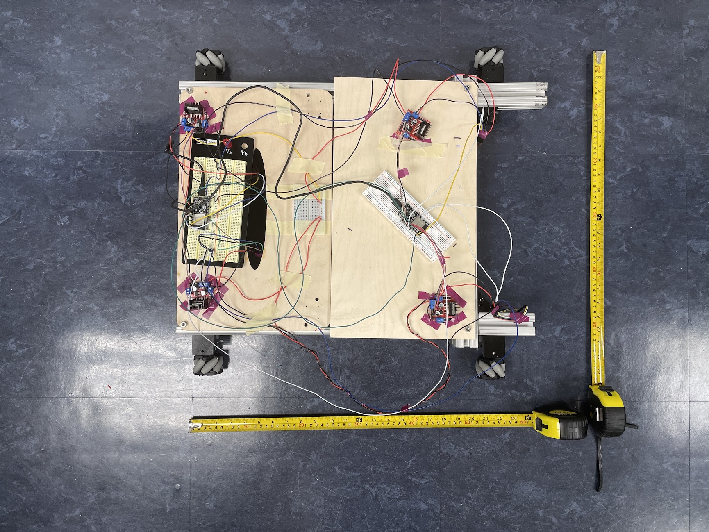
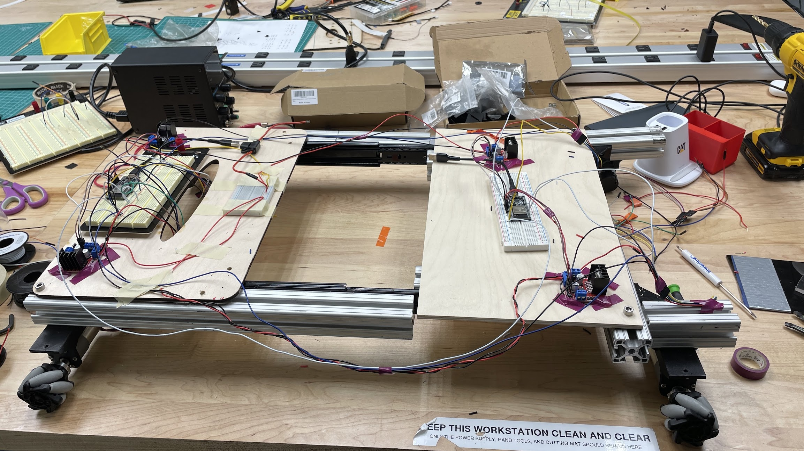
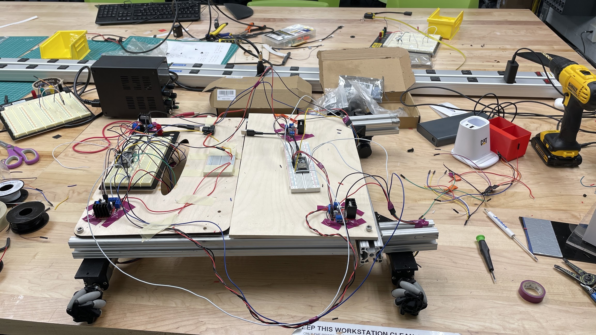
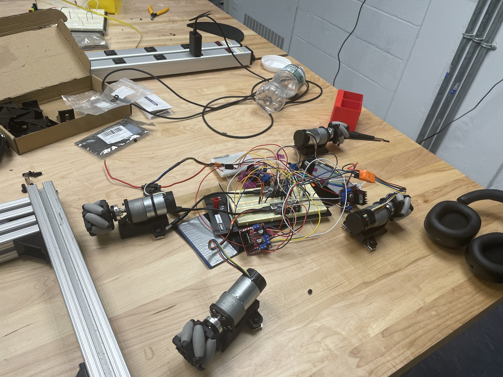
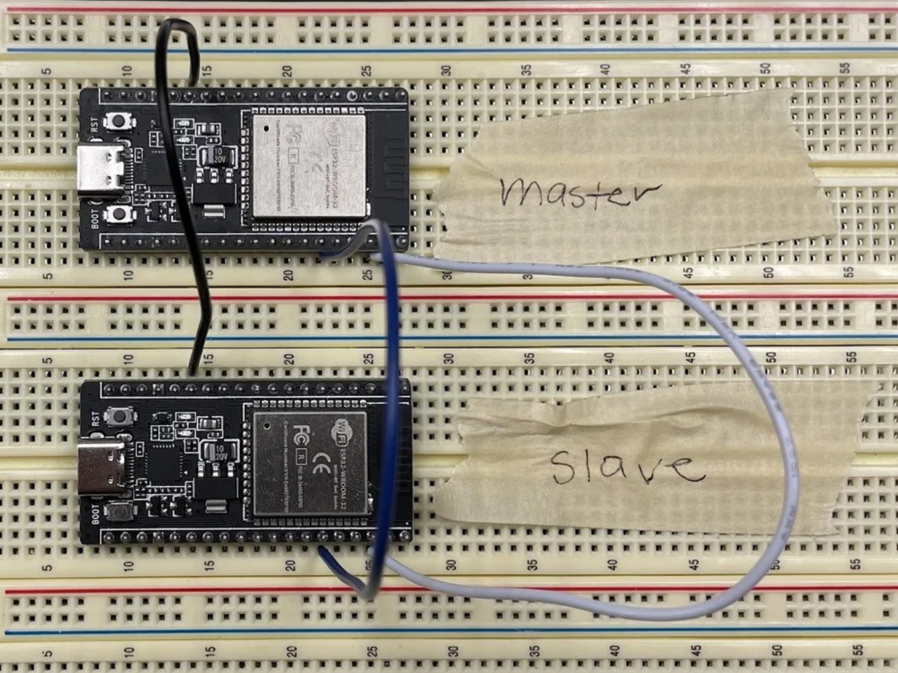
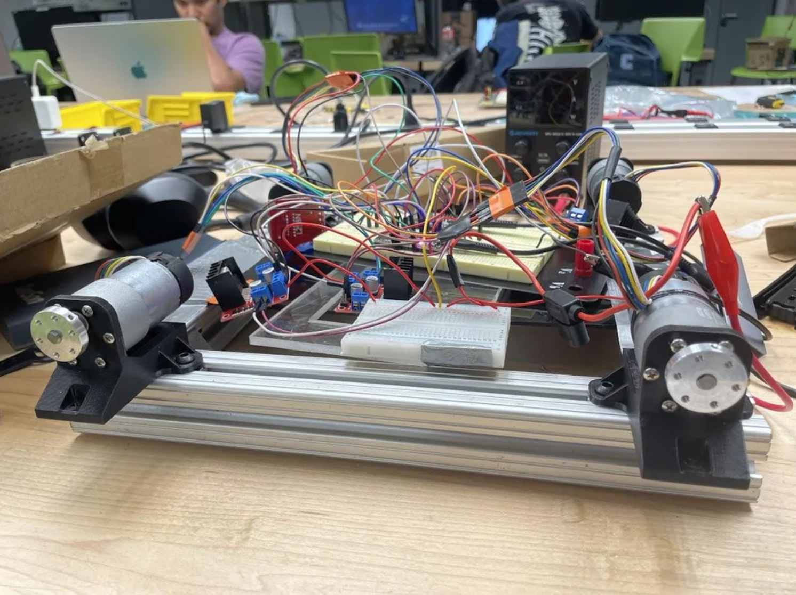
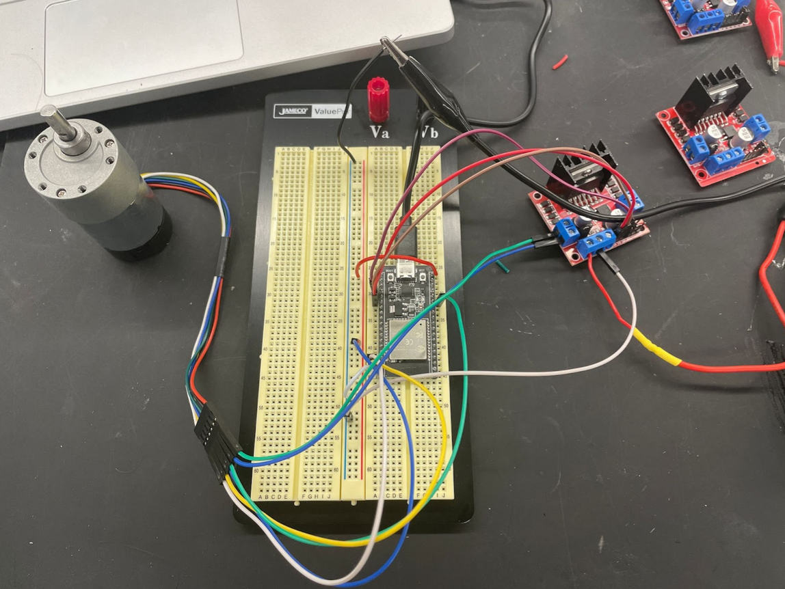
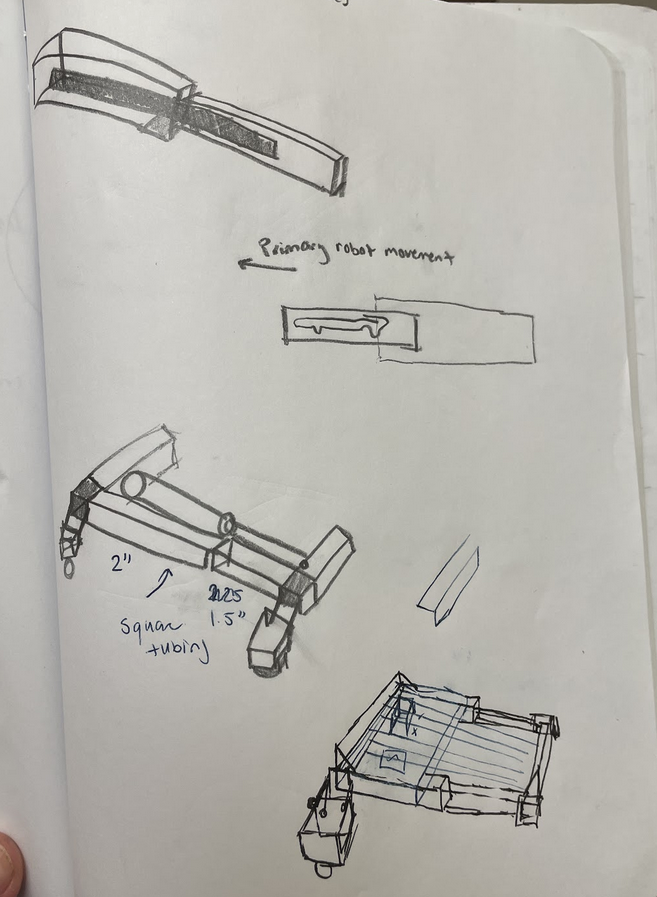
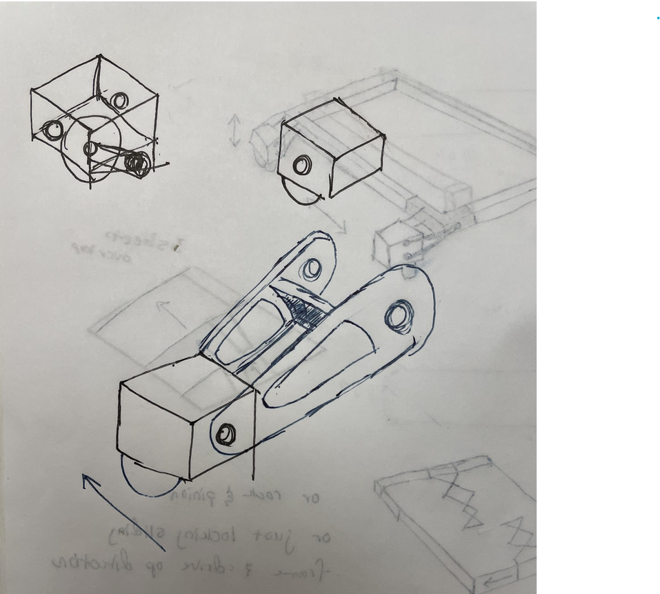
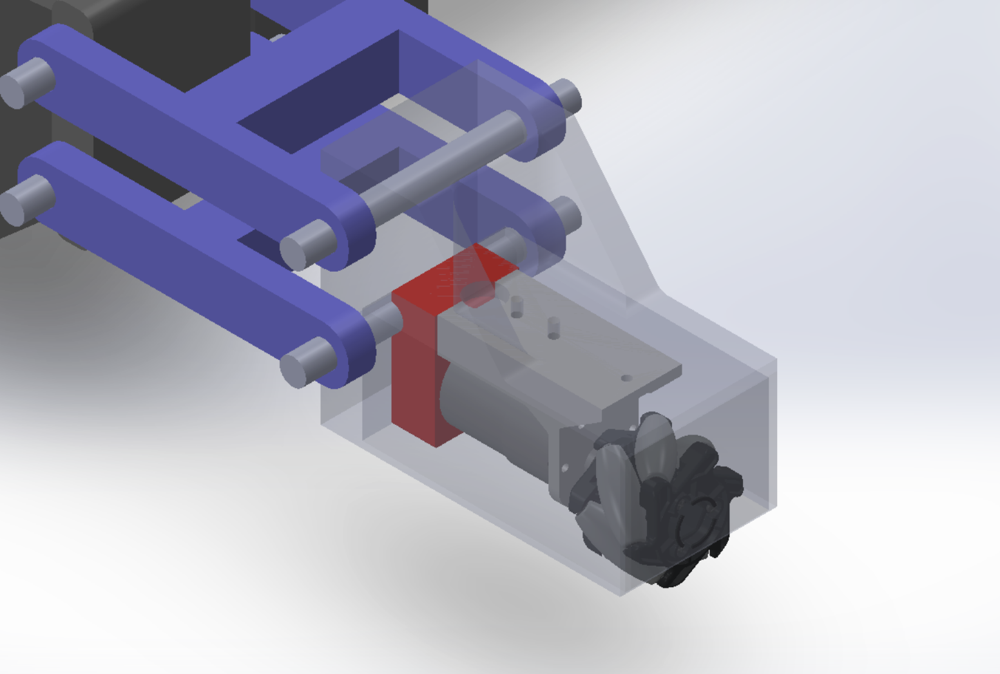
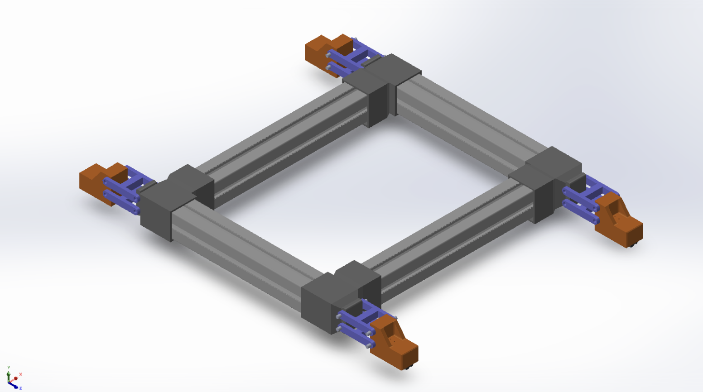
Two ESP32s split the motor load over I2C: one acts as master, the other as slave, each driving two of the platform's four DC motors through its own L298N driver. A dedicated 12V rail powers the drivers, with a common ground tying every board together.
Firmware runs on the Arduino IDE, using the Wire library for I2C and analogWrite() for PWM speed control. All four motors carry encoders, wired in now so closed-loop PID control on speed and position is a firmware change away rather than a hardware one.
Full Instructables Build Guide→